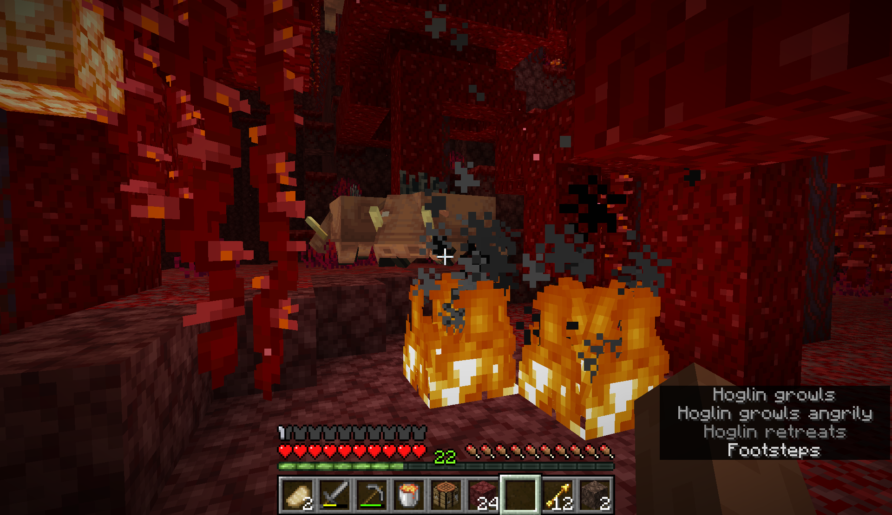
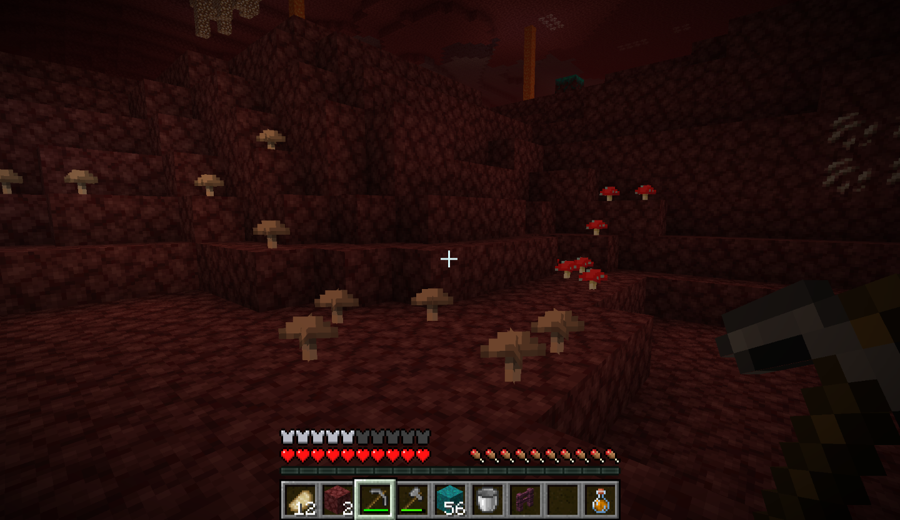
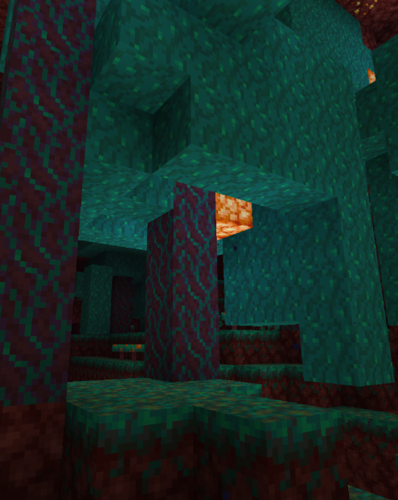
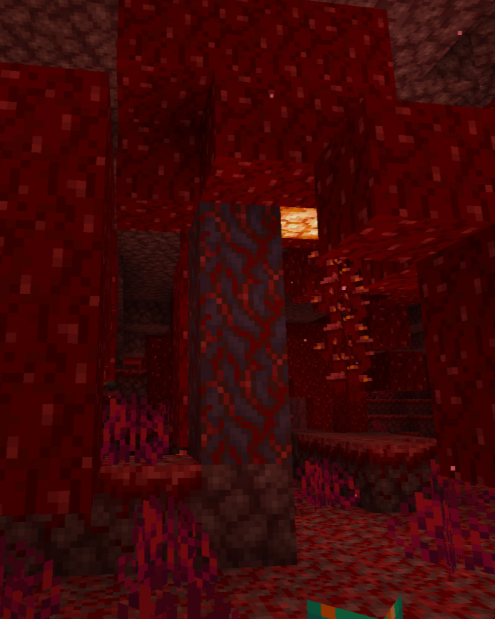
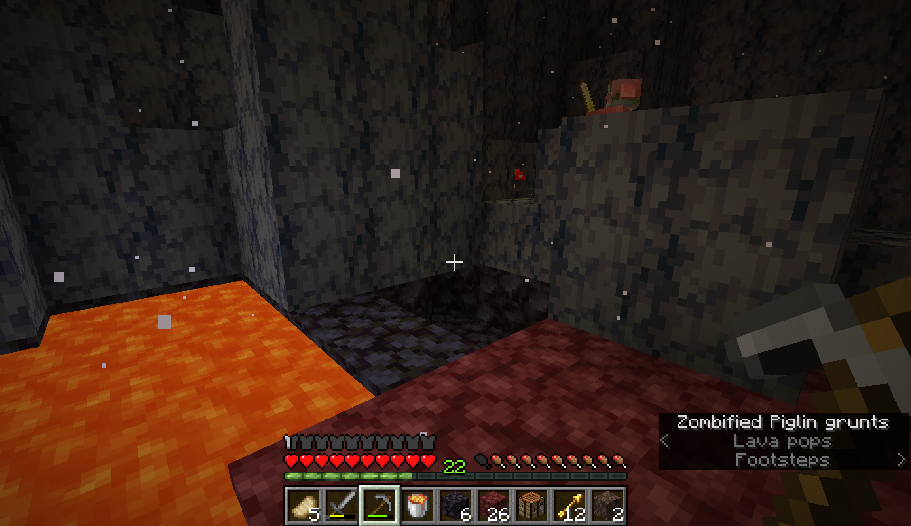

Basic Resources
Food


Food is harder to come by in the Nether. There aren't any passive mobs that drop meat, so food can be more tedious or dangerous to gather. Luckily there are a couple options available. First, mushroom stew. You can find brown and red mushrooms growing in Nether Waste biomes. With a bowl you can make a simple and filling meal. The issue with mushrooms as a food source is that farming them is hard. If you want to, you can make a dark room and plant a few mushrooms. Over time, the mushrooms will spread and sprout new ones. The other option for food is pork chops. Hoglins, which live in the crimson forest, are arguably the best source of food in the Nether. When killed, they drop 2-4 pork chops. If killed while on fire, the pork chops are automatically cooked. Cooking them on a soul campfire is also an option. To effectively kill them, use a lava bucket for a couple seconds, then pick the lava back up so the pork chops don't fall into the lava. To stay safe while doing this, bring a warped fungus. Hoglins are terrified of them and will run away from them. Warped fungus provides a safe zone when in the Crimson Forest.
Wood and Stone



Basic resources like wood and stone are much harder to get in the Nether. There are two types of trees in the Nether, and they generate in the Crimson and Warped Forests. They can provide plenty of wood and building blocks, but don't drop saplings like Overworld trees. They can be grown only by bonemealing the fungus that they grow from. You can renewably get the warped and crimson fungus by bonemealing the ground in their respective biomes. Bonemeal comes from bones, bone blocks, and from a composter. The leaf blocks on Nether trees provide a slow but safe option for early game bonemeal if placed in the composter. Later on you can use bones from skeletons as a good source of bonemeal.
Stone can be found in two places in the Nether: The Basalt Delta biome and in piglin barters. Both of these options are viable, but piglin bartering is safer. Piglins will drop 8-16 on about an 8% chance. Iron is rare, and can be only found inside loot chests or in piglin barters.